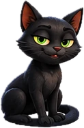
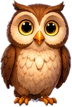
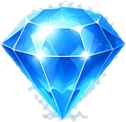

<!DOCTYPE html>
<html lang="uk">
<head>
<meta charset="UTF-8">
<meta name="viewport" content="width=device-width, initial-scale=1.0, maximum-scale=1.0, user-scalable=no, viewport-fit=cover">
<title>Кіт, який бреше — School Kingdoms</title>
<link rel="icon" type="image/png" sizes="32x32" href="../favicon-32.png">
<link rel="apple-touch-icon" href="../apple-touch-icon.png">
<link rel="manifest" href="../manifest.webmanifest">
<link rel="preconnect" href="https://fonts.googleapis.com">
<link rel="preconnect" href="https://fonts.gstatic.com" crossorigin>
<link href="https://fonts.googleapis.com/css2?family=Fredoka:wght@500;600;700&family=Nunito:wght@600;700;800&display=swap&subset=cyrillic,cyrillic-ext,latin" rel="stylesheet">
<link rel="stylesheet" href="nav-common.css?v=2">
<link rel="stylesheet" href="nav-scroll.css?v=3">
<link rel="stylesheet" href="nav-play.css?v=3">
<style>
/* ── кімната зі скринями ── */
#scene{height:230px; background:linear-gradient(180deg,#ffe8c2 0%,#fff3dc 60%,#d8b383 60%,#c79c66 100%);}
body.flipped #scene{background:linear-gradient(180deg,#e2d3ff 0%,#f1e9ff 60%,#c9b6e4 60%,#b6a2d6 100%);}
.who{position:absolute; top:8px; display:flex; align-items:flex-start; gap:4px; max-width:49%;}
.who .say{font-size:12.5px !important;}
body:not(.flipped) #cat{max-width:70%;}   /* поки сови немає — бульбашці кота більше місця */
.who .ic{font-size:38px; line-height:1; flex:none;}
.who .say{background:#fff; border:2px solid var(--line); border-radius:14px; padding:5px 9px; font-weight:800; font-size:13.5px; line-height:1.3; box-shadow:0 3px 0 rgba(44,43,58,.12); opacity:0; transform:scale(.85); transition:opacity .3s, transform .3s;}
.who .say.on{opacity:1; transform:none;}
.who .tag{display:block; font-size:11px; color:var(--soft); letter-spacing:.04em;}
#cat{left:8px;}
#owl{right:8px; flex-direction:row-reverse; text-align:right; opacity:0; transition:opacity .4s;}
#owl.on{opacity:1;}
#chests{position:absolute; left:0; right:0; bottom:10%; display:flex; justify-content:center; gap:14px;}
.chest{width:76px; height:62px; border-radius:12px 12px 8px 8px; position:relative; border:3px solid rgba(0,0,0,.25); box-shadow:0 5px 0 rgba(0,0,0,.18);
  display:grid; place-items:center; font-size:26px; transition:transform .3s;}
.chest:before{content:""; position:absolute; left:-3px; right:-3px; top:-3px; height:22px; border-radius:12px 12px 4px 4px; background:inherit; border:3px solid rgba(0,0,0,.25); filter:brightness(1.12); transform-origin:50% 0; transition:transform .45s;}
.chest .lock{position:relative; z-index:1; font-size:18px; margin-top:12px;}
.chest .in{position:absolute; top:-30px; font-size:30px; opacity:0; transition:opacity .3s .2s, transform .45s .2s; transform:translateY(10px);}
.chest.open:before{transform:rotateX(70deg) translateY(-14px);}
.chest.open .in{opacity:1; transform:none;}
.chest.open .lock{opacity:0;}
.chest .nm{position:absolute; bottom:-20px; font-weight:800; font-size:12px; color:#5c4426; white-space:nowrap;}
body.flipped .chest .nm{color:#4a3a6a;}
.c-r{background:#ff8787;} .c-b{background:#74c0fc;} .c-g{background:#8ce99a;} .c-l{background:#e0b07a;} .c-p{background:#d8a86e;}
/* намальовані скрині, кіт і сова (img/kit/) */
.who .ic img{display:block; width:46px; height:64px; object-fit:contain; filter:drop-shadow(0 2px 2px rgba(0,0,0,.2));}
.chest{width:84px; height:70px; border:0; border-radius:0; box-shadow:none; background:center bottom/contain no-repeat !important; filter:drop-shadow(0 4px 3px rgba(0,0,0,.25));}
.chest:before{display:none;}
.chest .lock{display:none;}
.c-r{background-image:url(img/kit/chest-red.webp) !important;} .c-b{background-image:url(img/kit/chest-blue.webp) !important;} .c-g{background-image:url(img/kit/chest-green.webp) !important;}
.c-l, .c-p{background-image:url(img/kit/chest-wood.webp) !important;}
.chest.open{background-image:none !important;}
.chest.open:after{content:""; position:absolute; left:-4px; right:-4px; bottom:0; height:132%; background:url(img/kit/chest-open.webp) center bottom/contain no-repeat;}
.chest .in{z-index:1; top:-34px;}
.chest .in img{display:block; width:40px; height:40px; object-fit:contain; filter:drop-shadow(0 0 6px rgba(120,200,255,.9));}
/* відповідь — торканням скрині */
#panel .opt.viaChest{display:none;}
.chest{cursor:pointer; transition:transform .15s, filter .3s;}
.chest:not(.open):not(.bad):hover{transform:translateY(-3px);}
.chest.tap{animation:chestTap .35s;}
@keyframes chestTap{40%{transform:scale(.9)}100%{transform:none}}
.chest.bad{filter:grayscale(.85) brightness(.75) drop-shadow(0 4px 3px rgba(0,0,0,.25)); animation:chestNo .4s; cursor:default;}
@keyframes chestNo{20%,60%{transform:translateX(-6px)}40%,80%{transform:translateX(6px)}}
.opts .opt{white-space:nowrap; padding:11px 6px; text-align:center;}   /* «🟥 Червона» — в один рядок */
body{background:linear-gradient(180deg,rgba(40,20,10,.05),rgba(40,20,10,.12)), url(img/kit/page-bg.webp) center/cover no-repeat fixed, #6b3f22;}   /* фон сторінки гри — горище художника */
/* ── редизайн за макетом: сцена без рамки, просто на горищі; великий кіт і скрині ── */
#scene{height:290px; background:none !important; border:0; box-shadow:none; overflow:visible;}
.who{top:4px; align-items:center; gap:2px; max-width:none;}
#cat{left:-2px; right:6px;} body:not(.flipped) #cat{max-width:none;}
#owl{right:-2px; left:auto;}
body.flipped #cat{right:auto; max-width:50%;} body.flipped #owl{max-width:50%;}
.who .ic img{width:96px; height:120px; filter:drop-shadow(0 6px 6px rgba(0,0,0,.35));}
.who .say{position:relative; border-radius:20px; border:2px solid var(--goldline); background:linear-gradient(180deg,#fffdf8,#fbefd6); padding:8px 12px;
  font-size:15px !important; box-shadow:0 4px 0 var(--goldshadow), 0 8px 14px rgba(60,30,10,.25);}
.who .tag{font-size:13px; color:#4a3a2a;}
#cat .say:before{content:""; position:absolute; left:-11px; top:46%; border:9px solid transparent; border-right-color:var(--goldline); border-left:0;}
#owl .say:before{content:""; position:absolute; right:-11px; top:46%; border:9px solid transparent; border-left-color:var(--goldline); border-right:0;}
#chests{bottom:30px; gap:22px;}
.chest{width:118px; height:98px;}
.chest .nm{bottom:-30px; font-size:14px; color:#5c3a16 !important; background:linear-gradient(180deg,#fff5e0,#f1d9ad); border:2px solid var(--goldline); border-radius:999px; padding:1px 14px; box-shadow:0 2px 0 var(--goldshadow);}
.chest .in{top:-44px;} .chest .in img{width:52px; height:52px;}
</style>
</head>
<body>
<script src="../sk-footer.js?v=6" data-base="../" data-back="self"></script>
<script src="nav-common.js?v=2"></script>
<script>
(function(){
  "use strict";
  var TOTAL = 5, log;
  /* скрині: назва, місцевий відмінок (у … скрині), клас кольору */
  var C3 = [{id:"r", nm:"Червона", loc:"червоній", em:"🟥"}, {id:"b", nm:"Синя", loc:"синій", em:"🟦"}, {id:"g", nm:"Зелена", loc:"зеленій", em:"🟩"}];
  var C2 = [{id:"l", nm:"Ліва", loc:"лівій", em:"⬅️"}, {id:"p", nm:"Права", loc:"правій", em:"➡️"}];

  NAV.mount({
    next: "avtobus-0.html",   // «Вирушай далі! ›» — наступний пункт карти
    title:"Кіт, який бреше", emoji:"🐈‍⬛🧰", sub:"Логіка · Світ навиворіт · 5 кроків",
    riddle:"У кімнаті — скрині, а в одній із них скарб 💎. Чорний кіт знає, де він… але <b>кіт завжди бреше!</b><span class='seq'>🐈‍⬛ «Скарб не в лівій скрині»</span>Де ж скарб? А потім — 🔄 переворот, і брехати почне хтось інший…",
    play:"До скринь ▶", steps:TOTAL, crown:"🐈‍⬛💎",
    badgeOff:"🐈‍⬛ кіт бреше", badgeOn:"🔄 сова бреше",
    prizeKey:"sk_kit_prize_v1", href:"kit.html", doneText:"Скарб знайдено — нагороду отримано!",
    winTitle:"Скарб знайдено!", winPerfect:"Жодного разу не повірив(-ла) брехунові!",
    lesson:[
      "Якщо хтось <b>завжди бреше</b>, правда — навпаки: «скарб <b>не</b> в лівій» означає «скарб <b>у</b> лівій».",
      "🔄 Після перевороту кіт каже правду, а бреше сова. Правдиві слова <b>звужують</b> пошук, а брехливі — <b>виключають</b> скриню.",
      "Перевір кожну скриню: чи не суперечить вона словам правдивого і чи не підтверджує слова брехуна."
    ],
    scene:'<div class="who" id="cat"><span class="ic"></span><div class="say" id="catSay"></div></div>'+
          '<div class="who" id="owl"><span class="ic"></span><div class="say" id="owlSay"></div></div><div id="chests"></div>',
    afterScene:'<div class="log" id="log"></div>',
    onStart:startGame
  });

  function renderLog(){
    var box = NAV.$("log"); box.innerHTML = '<div class="lh">📒 Записник шукача</div>';
    if(!log.length){ box.appendChild(NAV.el("div","empty","Поки нічого.")); return; }
    var rows = NAV.el("div","rows"); log.slice(-3).forEach(function(r){ rows.appendChild(NAV.el("div","r",r)); }); box.appendChild(rows);
  }
  function chests(list){
    var box = NAV.$("chests"); box.innerHTML = "";
    list.forEach(function(c){
      var d = NAV.el("div","chest c-"+c.id,'<span class="lock">🔒</span><span class="in"></span><span class="nm">'+c.nm+'</span>');
      d.id = "ch-"+c.id; box.appendChild(d);
    });
  }
  /* відкрити скриню: у правильній — скарб, в інших — павутиння */
  function openAll(list, win, cb){
    list.forEach(function(c, i){
      setTimeout(function(){
        var d = NAV.$("ch-"+c.id); d.querySelector(".in").innerHTML = c.id===win ? '' : "🕸️";
        d.classList.add("open"); NAV.snd.tone(c.id===win ? 880 : 300, 0.12);
      }, 250*i);
    });
    setTimeout(cb, 250*list.length + 700);
  }
  function say(who, text, tag){ var s = NAV.$(who+"Say"); s.innerHTML = '<span class="tag">'+tag+'</span>«'+text+'»'; s.classList.add("on"); }
  function stmt(s, list){ var c = list.filter(function(x){ return x.id===s.c; })[0]; return (s.not ? "Скарб не в " : "Скарб у ")+c.loc+" скрині"; }
  function holds(s, x){ return s.not ? x!==s.c : x===s.c; }
  /* відповідь — торканням скрині: кнопки-скрині ховаємо, скриня «натискає» свою кнопку
     (кнопка без скрині, як «Скарбу немає», лишається) */
  var CHEST_TX = {};   // текст кнопки → id скрині
  function markChests(opts){ CHEST_TX = {}; opts.forEach(function(o){ if(o.id) CHEST_TX[o.tx] = o.id; }); return opts; }
  function chestBtn(id){
    return [].filter.call(document.querySelectorAll("#panel .opt"), function(b){ return CHEST_TX[b.textContent] === id; })[0];
  }
  function syncChests(){
    [].forEach.call(document.querySelectorAll("#panel .opt"), function(b){
      var id = CHEST_TX[b.textContent]; if(!id) return;
      if(!b.classList.contains("viaChest")) b.classList.add("viaChest");   // без зайвих змін — інакше спостерігач зациклиться
      var ch = NAV.$("ch-"+id); if(ch) ch.classList.toggle("bad", b.classList.contains("bad"));
    });
  }
  new MutationObserver(syncChests).observe(NAV.$("panel"), {childList:true, subtree:true, attributes:true, attributeFilter:["class"]});
  NAV.$("chests").addEventListener("click", function(e){
    var ch = e.target.closest(".chest"); if(!ch || ch.classList.contains("open")) return;
    var b = chestBtn(ch.id.slice(3)); if(!b || b.disabled) return;
    ch.classList.remove("tap"); void ch.offsetWidth; ch.classList.add("tap");
    b.click();
  });
  function chestOpts(list, win, why){
    return markChests(list.map(function(c){ return c.id===win ? {tx:c.em+" "+c.nm, ok:true, id:c.id} : {tx:c.em+" "+c.nm, why:why(c), id:c.id}; }));
  }

  function startGame(){
    log = []; NAV.step(0,TOTAL); renderLog();
    NAV.$("owl").classList.remove("on"); NAV.$("owlSay").classList.remove("on"); NAV.$("catSay").classList.remove("on");
    chests(C2);
    NAV.hint("Кіт щось каже… Пам'ятай: він <b>завжди бреше</b>!");
    setTimeout(function(){
      var s = {not:true, c:"l"};
      say("cat", stmt(s, C2), "🐈‍⬛ кіт-брехун:");
      NAV.question("Де скарб? Торкнись скрині 👆", markChests([
        {tx:"⬅️ У лівій скрині", ok:true, id:"l"},
        {tx:"➡️ У правій скрині", id:"p", why:"Кіт сказав «не в лівій» — але ж він бреше! Значить, правда навпаки."},
        {tx:"🤷 Скарбу немає", why:"Скарб точно є в одній зі скринь. Кіт бреше лише про те, де саме."}
      ]), function(){
        openAll(C2, "l", function(){
          log.push("🐈‍⬛ «не в лівій» → скарб <b>у лівій</b> 💎"); renderLog();
          NAV.hint("Так! Кіт бреше — тож правда навпаки.","good");
          setTimeout(step2, 900);
        });
      }, {cols:1});
    }, 600);
  }

  function step2(){
    NAV.step(1,TOTAL); NAV.again = step2;
    chests(C3); NAV.$("catSay").classList.remove("on");
    var c = NAV.pick(C3), s = {not:true, c:c.id};
    NAV.hint("Тепер скринь три! Кіт знову підказує…");
    setTimeout(function(){
      say("cat", stmt(s, C3), "🐈‍⬛ кіт-брехун:");
      NAV.question("Де скарб? Торкнись скрині 👆", chestOpts(C3, c.id, function(){
        return "Кіт бреше: «не в "+c.loc+"» насправді означає — саме в "+c.loc+" скрині!";
      }), function(){
        openAll(C3, c.id, function(){
          log.push("🐈‍⬛ «"+stmt(s, C3)+"» → скарб <b>у "+c.loc+"</b> 💎"); renderLog();
          NAV.hint("Правильно! Брехня кота — підказка навпаки.","good");
          setTimeout(step3, 900);
        });
      }, {cols:3, keepOrder:true});
    }, 500);
  }

  function step3(){
    NAV.step(2,TOTAL);
    NAV.hint("Подивись у записник 📒 — як розгадувати кота?");
    NAV.question("Яке правило?", [
      {tx:"Кіт завжди бреше — вір йому навпаки", ok:true},
      {tx:"Кіт каже правду", why:"Тоді скарб був би в іншій скрині. Перевір записник!"},
      {tx:"Кіт то бреше, то каже правду", why:"Обидва рази кіт збрехав — він бреше завжди."}
    ], function(){ setTimeout(flip, 900); });
  }

  function flip(){
    NAV.modal("🔄","Навиворіт!","Над кімнатою пролетів вітер-перевертун. Тепер <b>кіт каже правду</b> 🐈‍⬛✅, а прилетіла <b>сова, яка завжди бреше</b> 🦉❌!",{nav:true, btn:"🔄 Перевернути"}, function(){
      NAV.snd.whoosh(); NAV.flipAnim();
      setTimeout(function(){
        NAV.setFlip(true); NAV.step(3,TOTAL);
        log.push("🔄 <b>Кіт тепер правдивий, сова бреше!</b>"); renderLog();
        chests(C3); NAV.$("catSay").classList.remove("on"); NAV.$("owl").classList.add("on");
        twoClues({not:true, c:"r"}, {not:true, c:"b"}, step5);
      }, 500);
    });
  }

  /* кіт (правдивий) і сова (бреше) — рівно одна скриня підходить */
  function twoClues(cat, owl, next){
    var win = C3.filter(function(x){ return holds(cat, x.id) && !holds(owl, x.id); })[0].id;
    say("cat", stmt(cat, C3), "🐈‍⬛ тепер каже правду:");
    setTimeout(function(){ say("owl", stmt(owl, C3), "🦉 сова-брехуха:"); }, 500);
    NAV.hint("Кіт тепер <b>каже правду</b>, а сова <b>бреше</b>. Перевір кожну скриню!");
    NAV.busy = false;
    setTimeout(function(){
      NAV.question("Де скарб? Торкнись скрині 👆", chestOpts(C3, win, function(c){
        if(!holds(cat, c.id)) return "Кіт тепер правдивий: він сказав «"+stmt(cat, C3)+"» — тож не в "+c.loc+".";
        return "Сова бреше! Вона сказала «"+stmt(owl, C3)+"» — для "+c.loc+" скрині це була б правда, а сова правди не каже.";
      }), function(){
        var w = C3.filter(function(x){ return x.id===win; })[0];
        openAll(C3, win, function(){
          log.push("🐈‍⬛✅ «"+stmt(cat, C3)+"» + 🦉❌ «"+stmt(owl, C3)+"» → <b>у "+w.loc+"</b> 💎"); renderLog();
          NAV.hint("Так! Правді кота віримо, а сові — навпаки.","good");
          setTimeout(next, 1000);
        });
      }, {cols:3, keepOrder:true});
    }, 900);
  }

  function step5(){
    NAV.step(4,TOTAL); NAV.again = step5;
    chests(C3); NAV.$("catSay").classList.remove("on"); NAV.$("owlSay").classList.remove("on");
    /* кіт: «не в A» (лишає дві скрині), сова: «у B» (бреше → не в B) — скарб у третій */
    var ids = NAV.shuffle(["r","b","g"]);
    setTimeout(function(){ twoClues({not:true, c:ids[0]}, {not:false, c:ids[1]}, NAV.finish); }, 400);
  }
})();
</script>
<script type="module" src="../firebase-config.js"></script>
<script src="../sk-items.js?v=19"></script>
<script src="../sk-curriculum.js?v=8"></script>
<script src="../sk-rewards.js?v=5"></script>
<script src="../sk-prize.js?v=3"></script>
<script src="../sk-finish.js?v=6"></script>
<script src="nav-scroll.js?v=3"></script>
<script>NAVSCROLL.init({hintTop:true, winImg:["img/kit/chest-open.webp","img/kit/gem.webp"], bg:"img/kit/start-hero.webp", frame:"img/kit/title-frame.webp", focus:[0.04, 1], top:"#5d2e22", bot:"#5a3420", play:"До скринь"});</script>
<script src="nav-intro.js?v=3"></script>
</body>
</html>
